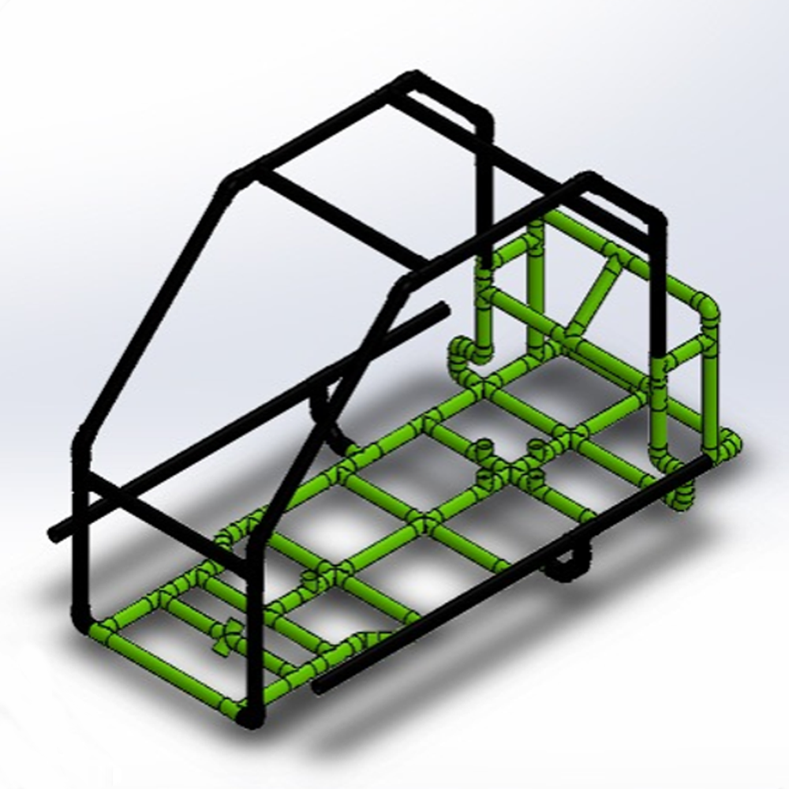
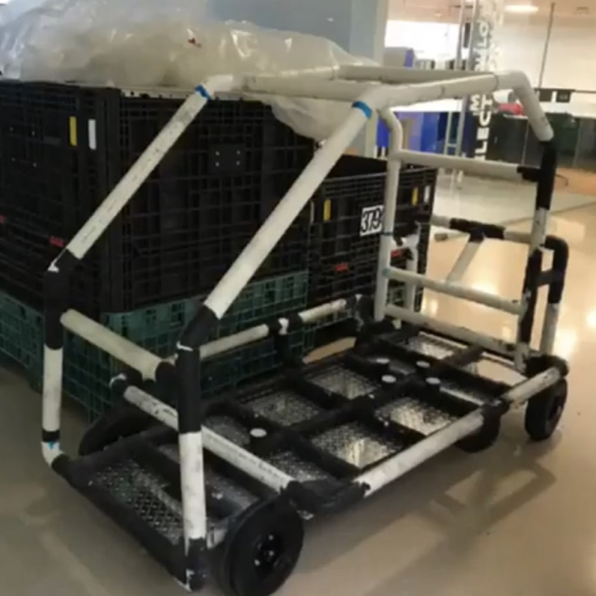

Evidence



This project consisted of creating an electric Go Kart using PVC pipes as the main structural material. The reason behind choosing this unconventional material was to spread awareness of science and technology to remote areas of Mexico. I had the great idea of bringing a tangible demonstration of what is possible through science and technology. To achieve this, I thought that creating an electric vehicle would be a captivating way to showcase engineering principles. To build the Go Kart with a limited budget and minimal tools, I decided to abstract the construction process by using PVC pipes as a LEGO-like building system. I would bring pre-cut PVC pieces to schools where presentations would take place, and the children could assemble them following detailed instructions.
In addition to the PVC structure, each Go Kart would include the following components:
This project, with its technological and social nature, was awarded by the company "DOW chemical" as the best project in Latin America in 2019. As a result, I had the opportunity to travel to Kenya and participate in a volunteer program alongside the other 27 winners from around the world. This experience allowed me to contribute my skills and knowledge to a meaningful cause while collaborating with like-minded individuals from different countries. It was a truly enriching and rewarding experience that broadened my perspective and reinforced my passion for using technology to make a positive impact on society.